Code
#if (!require("pacman")) install.packages("pacman")
pacman::p_load(tidyverse,dplyr,binom, ggplot2, meta, metafor)#if (!require("pacman")) install.packages("pacman")
pacman::p_load(tidyverse,dplyr,binom, ggplot2, meta, metafor)Meta-analysis can be defined as a statistical tool or a formal process of combining the results from multiple studies [1]. This allows the analysis of the results from various scientific studies, which are often not performed in the same place or using the same method [2]. Notably, both randomized clinical trials and observational studies are prone to a wide range of biases, and meta-analysis may lend spurious precision to questionable results. Therefore, the focus of meta-analysis of observational studies should be an evaluation of heterogeneity [1].
“Proportion study” is a study where the main outcome is a proportion (e.g., prevalence, incidence, percentage) of an event in a population.
For example:
Most meta-analyses aim to evaluate the effect of an intervention or exposure compared with a comparator. The result is a pooled estimate of effect size which includes risk ratio, odds ratio, incidence rate ratio, or mean difference [3]. In contrast, systematic reviews of studies estimating the proportion of a particular disease or health status typically involve a single study group, and the outcomes (e.g., prevalence, incidence, etc.) do not behave like conventional effect sizes. Some characteristics of the proportion are as follows:
Let examine the characteristics of the proportion. Here,
## Create data set
set.seed(123)
data <- data.frame(
Study = paste0("Study_", 1:1000),
n = sample (1:1000,1000)
)
data$y <- mapply(function(n) sample(0:n,1), data$n)
## Calculate the propotion
data$p <- data$y/data$n
## Calculate variance (= p[1-p]/n)
data$var_p <- (data$p*(1-data$p))/data$n
## Plot the proportion (Character 1)
ggplot(data,aes(Study,p))+
geom_hline(yintercept = 0, color = "blue", linewidth = 0.5)+
geom_hline(yintercept = 1, color = "blue", linewidth = 0.5)+
geom_point(alpha = 0.5)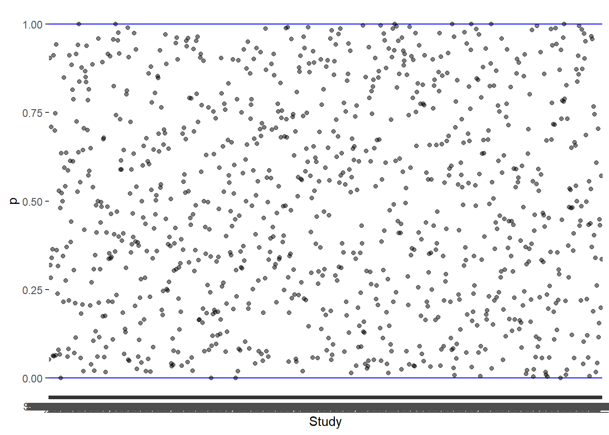
This can be visualize as -
## Plot the variance
ggplot(data,aes(Study,var_p))+
geom_hline(yintercept = 0, color = "red", linewidth = 0.5)+
geom_hline(yintercept = max(data$var_p), color = "red", linewidth = 0.5)+
geom_point(alpha = 0.5)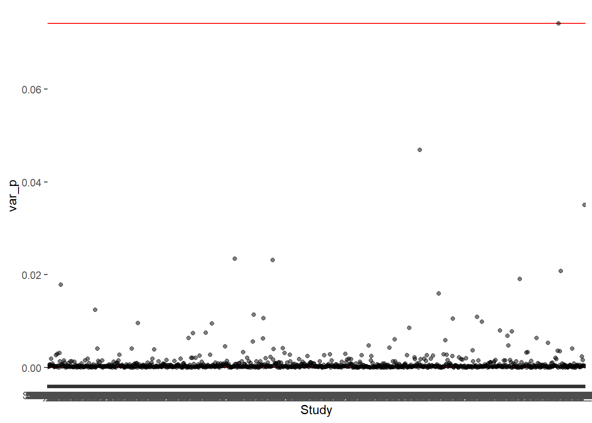
Or as Raw proportions vs variance
## Plot the variance
ggplot(data,aes(p,var_p))+
geom_hline(yintercept = 0, color = "red", linewidth = 0.5)+
geom_hline(yintercept = max(data$var_p), color = "red", linewidth = 0.5)+
geom_point(alpha = 0.5)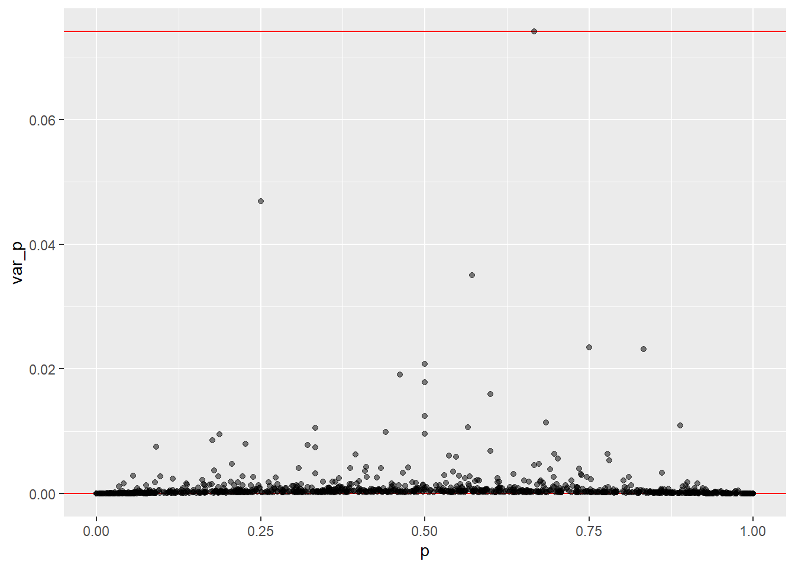
data_0 <- data %>% filter(p == 0)
data_0 Study n y p var_p
1 Study_117 51 0 0 0
2 Study_362 106 0 0 0
3 Study_401 10 0 0 0
4 Study_930 1 0 0 0Look at the column of variance (var_p). They are zeros.
mean_p <- mean(data$p, na.rm = TRUE)
## Plot the proportion (Character 1)
ggplot(data,aes(Study,p))+
geom_point(alpha = 0.5) +
geom_hline(yintercept = 0, color = "blue", linewidth = 0.5)+
geom_hline(yintercept = 1, color = "blue", linewidth = 0.5)+
geom_abline(intercept = mean_p, slope = 0, color = "red")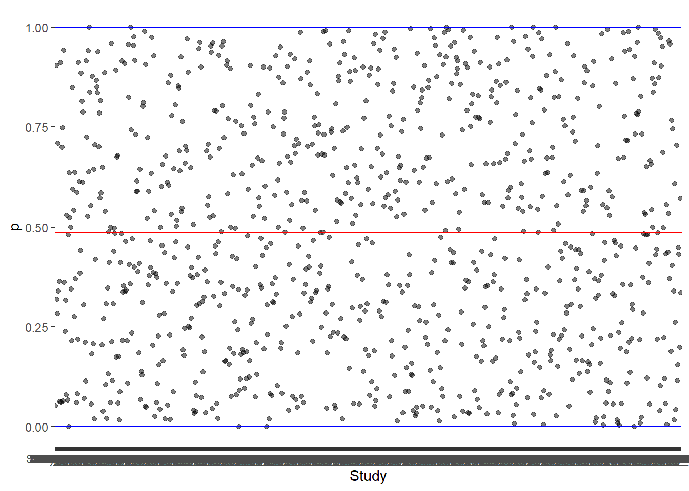
Let’s check the distributions of the proportions
ggplot(data,aes(p))+
geom_density(color = "red",
fill = "skyblue")+
geom_histogram(aes(y = after_stat(density)),
fill = "grey",
color = "black",
bins = 30,
alpha = 0.3) +
theme_classic()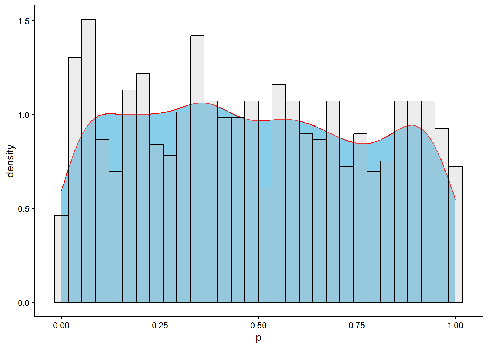
Are they look like normal?
But, when conducting a meta-analysis of proportions (pooling a single proportion across multiple studies), several foundational assumptions must be met to ensure the statistical validity and clinical relevance of your pooled estimate. Among several assumptions one most important assumption is the normality of the effect sizes (i.e., proportions).
To stabilize variance and improve normality, proportions can be transformed to another scale. Some such transformations are -
Let see what happen to our example proportions if we apply logit transformation to them.
\[ Logit (p) = log (\frac{p}{1-p}) \]
## Perform logit transformation of the proportions and plot them
data %>%
filter(p>0,p<1) %>% # Here, we are losing some data where data has 0% or 100% proportion
mutate(lg_p = log(p/(1-p))) %>%
ggplot(.,aes(x = lg_p))+
geom_density(color = "red",
fill = "skyblue")+
theme_classic()+
theme(axis.title.y = element_blank(),
axis.text.y = element_blank(),
axis.ticks.y = element_blank()) 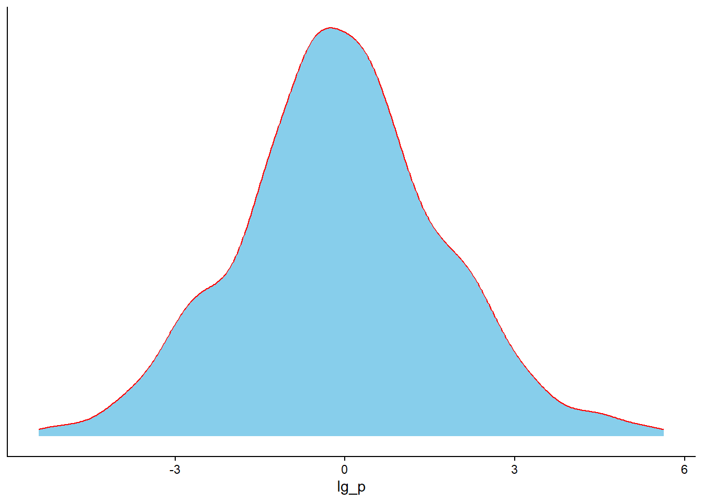
If we don’t want to loss the data from the studies with 0% and 100% event, we need continuity-correction.
“Continuity-corrected proportion usually refers to adjusting a sample proportion by adding a small factor (commonly 0.5) to the numerator and 1 to the denominator.”
Let’s do that (we have to do the correction for all proportions)
data %>%
mutate(p_cc = (p*n + 0.5)/(n + 1)) %>%
mutate(lg_p = log(p_cc/(1-p_cc))) %>%
ggplot(.,aes(x = lg_p))+
geom_density(color = "red",
fill = "skyblue")+
theme_classic()+
theme(axis.title.y = element_blank(),
axis.text.y = element_blank(),
axis.ticks.y = element_blank()) 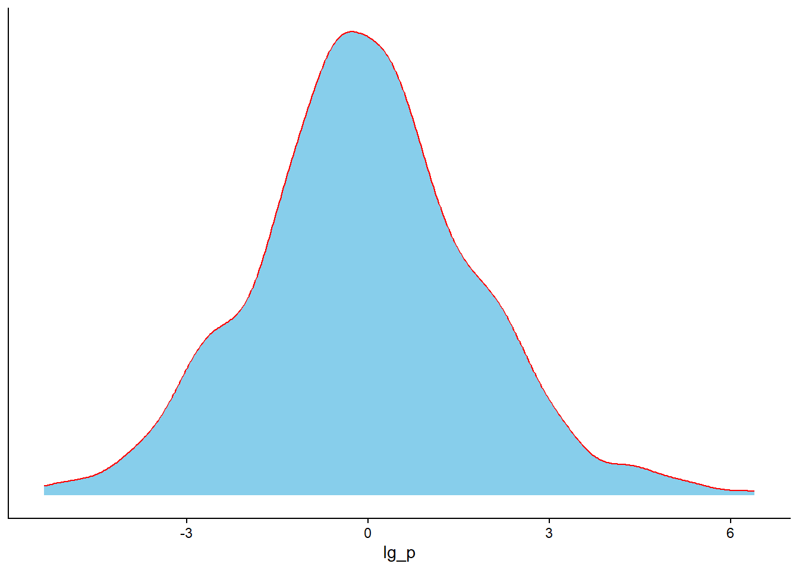
See what happened with variance now. An approximation of variance of logit transformed proportions could be -
\[ Var(logit(p)) = \frac{1}{np(1-p)} \]
## Calculate variance and plot them
data %>%
mutate(p_cc = (p*n + 0.5)/(n + 1)) %>%
mutate(lg_p = log(p_cc/(1-p_cc))) %>%
mutate(var_lg_p = 1/(n*p_cc*(1-p_cc))) %>%
ggplot(.,aes(x = lg_p, y = var_lg_p))+
geom_point(alpha=0.5)+
geom_smooth(method = "loess", se = FALSE, formula = y ~ x)+
theme_minimal()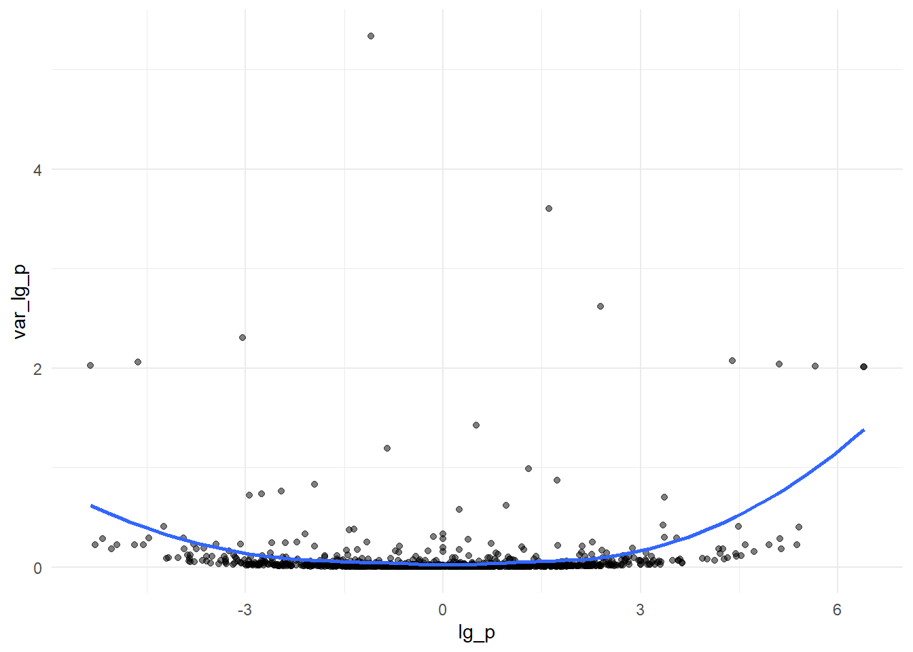
The plots show a successful partial stabilization, but not enough to assume homoscedasticity.
log(p)
data %>%
mutate(p_cc = (p*n + 0.5)/(n + 1)) %>%
mutate(log_p = log(p_cc)) %>%
ggplot(.,aes(x = log_p))+
geom_density(color = "red",
fill = "skyblue")+
theme_minimal()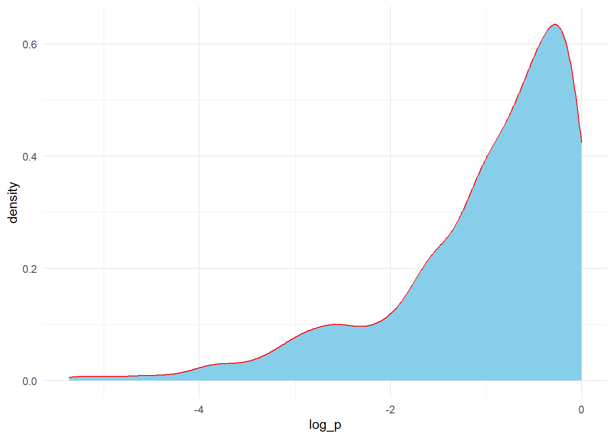
log(p) vs Var(log(p))
data %>%
mutate(p_cc = (p*n + 0.5)/(n + 1)) %>%
mutate(log_p = log(p_cc)) %>%
mutate(var_log_p = (1-p_cc)/(n*p_cc)) %>% # another alternative = (1/y) - (1/n)
ggplot(.,aes(x = log_p, y = var_log_p))+
geom_point(alpha=0.5)+
geom_smooth(method = "loess", se = FALSE, formula = y ~ x)+
theme_minimal()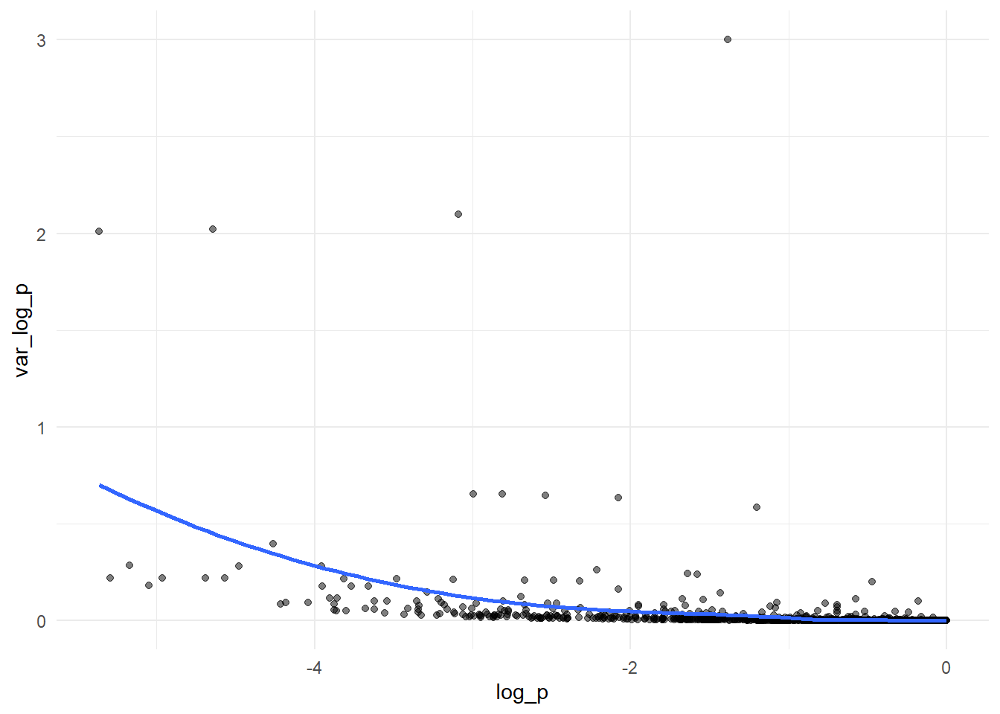
arcsine(p)
data %>%
mutate(as_p = asin(sqrt(p))) %>%
ggplot(.,aes(x = as_p))+
geom_density(color = "red",
fill = "skyblue")+
theme_minimal()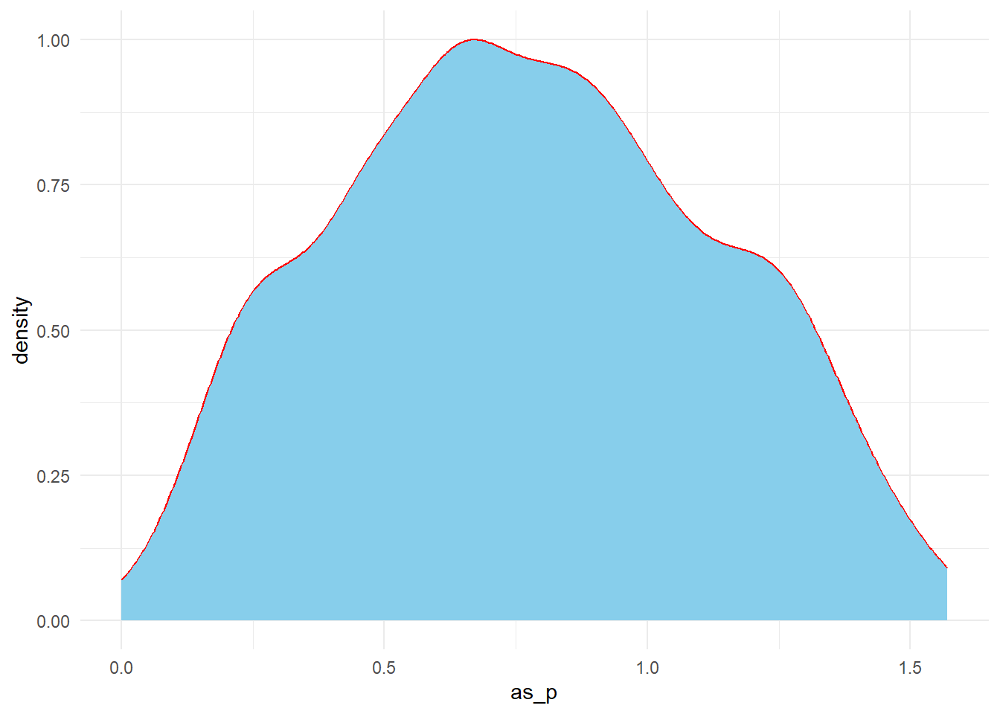
arcsine(p) vs var (arcsine(p))
data %>%
mutate(as_p = asin(sqrt(p))) %>%
mutate(var_as_p = 1/(4*n)) %>%
ggplot(.,aes(x = as_p, y = var_as_p))+
geom_point(alpha=0.5)+
geom_smooth(method = "loess", se = FALSE, formula = y ~ x)+
theme_minimal()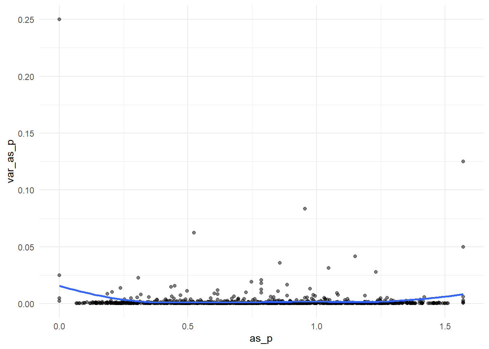
doublearcsine(p)
data %>%
mutate(das_p = asin(sqrt(y/(n+1))) + asin(sqrt((y+1)/(n+1)))) %>%
ggplot(.,aes(x = das_p))+
geom_density(color = "red",
fill = "skyblue")+
theme_minimal()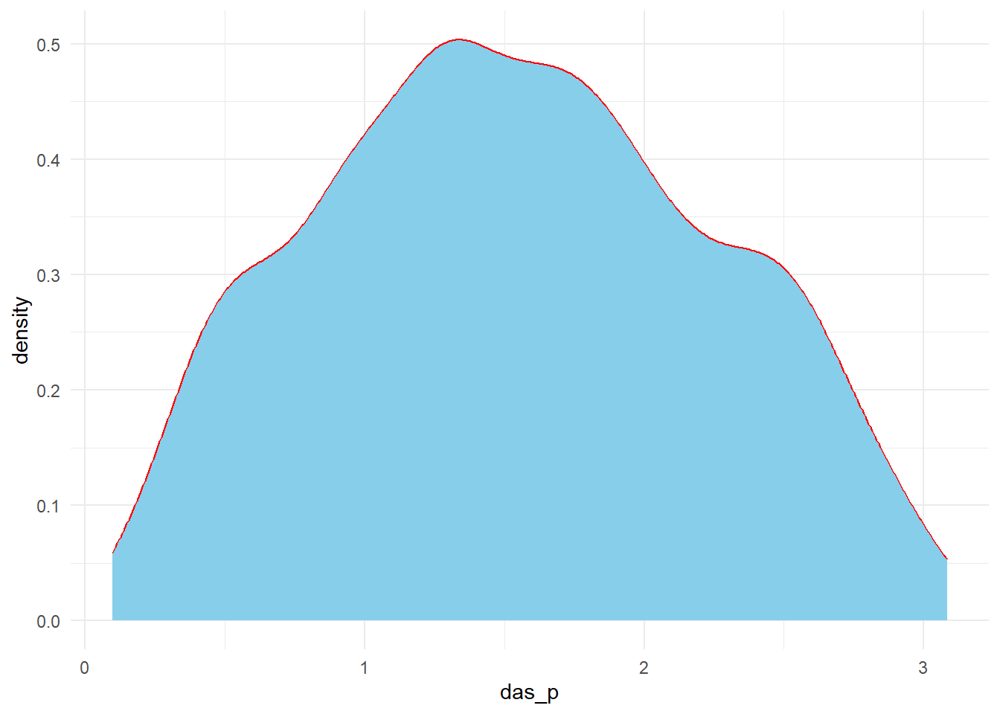
doublearcsine(p) vs var(doublearcsine(p))
data %>%
mutate(das_p = asin(sqrt(y/(n+1))) + asin(sqrt((y+1)/(n+1)))) %>%
mutate(var_das_p = 1/(n + 0.5)) %>%
ggplot(.,aes(x = das_p, y = var_das_p))+
geom_point(alpha=0.5)+
geom_smooth(method = "loess", se = FALSE, formula = y ~ x)+
theme_minimal()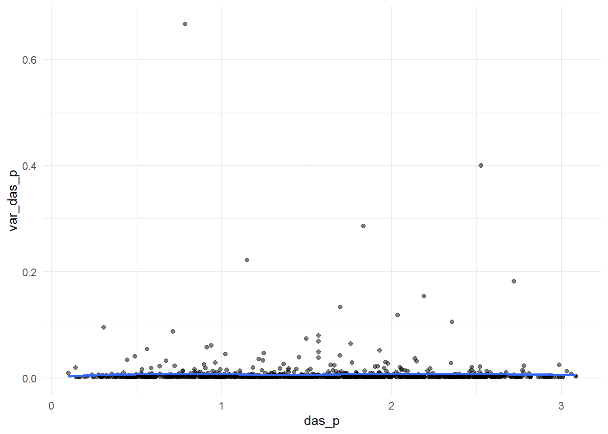
So far, we have observed that the logit transformation performs better in improving normality and reducing variance instability. Now, we can go for conducting meta-analysis.
The two main parametric models used to combine results from multiple studies are the fixed-effect (FE) and random-effects model (RE).
The FE model assumes that the true proportion is identical across studies included in meta-analysis, and any observed variation in proportion estimates is only due to random sampling error within each study, known as within-study variance.
In contrast, the RE model assumes the true proportions are not the same across studies but follow a normal distribution.
In other words, the RE model accounts for both within-study and between-study variances, while the FE model assumes that the between-study variance is zero (i.e., between-study heterogeneity does not exist) [2,4]. Hackenberger (2020) suggested the use of an FE model if there is no statistical or methodological heterogeneity and if it is not necessary to generalize the conclusions. If a generalized conclusion is the objective and data are available from more than five different studies, a RE model would be appropriate [2,5].
The random-effects model can be estimated by several methods such as -
In all cases, the summary effect size (i.e., the summary proportion) is estimated as the weighted average of the observed effect sizes extracted from primary studies. The weighting for each observed effect size is the inverse of the total variance of a study, which is the sum of the within-study variance and the between-study variance. These two methods differ mainly in the estimation of the between-study variance, commonly denoted as τ2 in the meta-analytic literature [4].
The data from multiple studies can be combined following two approaches: (i) classical inverse variance meta-analysis (also known as the two-step method) and (ii) meta-analysis based on generalized linear mixed model (GLMM) [6,7].
Note: In practice, meta-analyses of proportion studies rarely include a very large number of studies (e.g., 1000 studies). For easier visualization and demonstration of the modeling process, we will use the first 20 studies in our examples.
This method requires the estimation of the study-specific proportion (or transformed proportion) and its variance (or standard error) in the first step, followed by a second step where the results from multiple studies are combined to get the pooled proportion estimate.
metagen() function from meta package: Only for logit transformed proportions## Transform the proportion (Step-1)
data1 <- data %>%
slice(1:20) %>%
mutate(p_cc = (y + 0.5)/(n + 1),
lg_p = log(p_cc/(1-p_cc)),
var_lg_p = 1/(n*p_cc)+1/(n*(1-p_cc)),
se_lg_p = sqrt(var_lg_p))
## Pool transformed proportions (Step-2)
model1 <- metagen(
TE = lg_p,
seTE = se_lg_p,
studlab = Study,
data = data1
)
summary(model1) 95%-CI %W(common) %W(random)
Study_1 -2.8616 [-3.2869; -2.4362] 1.4 5.0
Study_2 -0.1425 [-0.3251; 0.0402] 7.9 5.1
Study_3 -2.0516 [-2.5128; -1.5905] 1.2 5.0
Study_4 0.0835 [-0.0875; 0.2546] 8.9 5.1
Study_5 0.8303 [ 0.5251; 1.1356] 2.8 5.0
Study_6 1.2051 [ 1.0532; 1.3571] 11.3 5.1
Study_7 -1.0615 [-1.2183; -0.9047] 10.6 5.1
Study_8 0.3049 [-0.0602; 0.6699] 2.0 5.0
Study_9 0.3023 [ 0.0730; 0.5316] 5.0 5.0
Study_10 2.2216 [ 1.7856; 2.6576] 1.4 5.0
Study_11 2.7661 [ 2.2344; 3.2978] 0.9 4.9
Study_12 0.0000 [-1.0476; 1.0476] 0.2 4.6
Study_13 -2.3892 [-2.7546; -2.0238] 2.0 5.0
Study_14 -2.5666 [-2.8619; -2.2712] 3.0 5.0
Study_15 -2.8020 [-3.1460; -2.4581] 2.2 5.0
Study_16 2.7151 [ 2.3844; 3.0459] 2.4 5.0
Study_17 0.1564 [ 0.0145; 0.2982] 13.0 5.1
Study_18 -1.3047 [-1.4843; -1.1250] 8.1 5.1
Study_19 -1.5208 [-2.0563; -0.9852] 0.9 4.9
Study_20 -0.6533 [-0.7871; -0.5195] 14.6 5.1
Number of studies: k = 20
95%-CI z p-value
Common effect model -0.2620 [-0.3132; -0.2108] -10.04 < 0.0001
Random effects model -0.3400 [-1.1064; 0.4265] -0.87 0.3846
Quantifying heterogeneity (with 95%-CIs):
tau^2 = 3.0181 [1.7289; 6.4883]; tau = 1.7373 [1.3149; 2.5472]
I^2 = 99.1% [98.9%; 99.2%]; H = 10.54 [9.74; 11.40]
Test of heterogeneity:
Q d.f. p-value
2109.61 19 0
Details of meta-analysis methods:
- Inverse variance method
- Restricted maximum-likelihood estimator for tau^2
- Q-Profile method for confidence interval of tau^2 and tau
- Calculation of I^2 based on QWe need back transformation
inv_logit <- function(x) exp(x) / (1 + exp(x))
pooled_logit <- model1$TE.random
se_logit <- model1$seTE.random
ci_logit <- c(
pooled_logit - 1.96 * se_logit,
pooled_logit + 1.96 * se_logit
)
pooled_proportion <- round(inv_logit(pooled_logit)*100,2)
ci_proportion <- round(inv_logit(ci_logit)*100,2)
paste0(pooled_proportion,"%", " (95%CI: ",ci_proportion[1],"%"," - ",ci_proportion[2],"%", ")")[1] "41.58% (95%CI: 24.85% - 60.5%)"However, a comprehensive details of this method has been described by [4]. Now, we will follow that method
Here, “ies” (short for individual effect size)
A) Without transformation of proportions
data1 <- data %>%
slice(1:20)
# Create a table with effect sizes and SEs
ies <- escalc(xi = y,
ni = n,
data = data1,
measure="PR") # measure (=computational method) "PR" used for no transformation
#Pool the derived effect sizes
pes <- rma(yi, #“pes”, which stands for pooled effect size.
vi,
data = ies,
method = "REML")
print (pes)
Random-Effects Model (k = 20; tau^2 estimator: REML)
tau^2 (estimated amount of total heterogeneity): 0.0943 (SE = 0.0310)
tau (square root of estimated tau^2 value): 0.3071
I^2 (total heterogeneity / total variability): 99.73%
H^2 (total variability / sampling variability): 376.25
Test for Heterogeneity:
Q(df = 19) = 10327.6360, p-val < .0001
Model Results:
estimate se zval pval ci.lb ci.ub
0.4389 0.0691 6.3497 <.0001 0.3034 0.5744 ***
---
Signif. codes: 0 '***' 0.001 '**' 0.01 '*' 0.05 '.' 0.1 ' ' 1B) With logit transformation of proportions
# Create a table with effect sizes and SEs
ies.logit <- escalc(xi = y,
ni = n,
data = data1,
measure="PLO") # measure (=computational method) "PLO" used for logit transformation
#Pool the derived effect sizes
pes.logit <- rma(yi, #“pes”, which stands for pooled effect size.
vi,
data = ies.logit)
# Inverse of logit transformation
pes_predict <- predict (pes.logit, transf = transf.ilogit)
print (pes_predict)
pred ci.lb ci.ub pi.lb pi.ub
0.4154 0.2472 0.6059 0.0207 0.9598 C) With double arcsine transformation of proportions
# Create a table with effect sizes and SEs
ies.da <- escalc(xi = y, #da for double arcsine
ni = n,
data = data1,
measure="PFT") # measure (=computational method) "PFT" used for double arcsine transformation transformation
#Pool the derived effect sizes
pes.da <- rma(yi, #“pes”, which stands for pooled effect size.
vi,
data = ies.da)
# Inverse of double arcsine transformation
pes_predict <- predict (pes.da, transf = transf.ipft.hm, targ = list(ni = data1$n))
#Alternatively we can do back transformation as foloows:
# (I just don't want to use this way at this moment,That is why i am putting the "#" before code)
#pes_predict <- predict (pes.da , transf = transf.ipft.hm, targ = list (ni =1/( pes.da$se )^2) )
print (pes_predict)
pred ci.lb ci.ub pi.lb pi.ub
0.4290 0.2778 0.5872 0.0000 0.9844 Here, we will use the logit transformation. As I mentioned earlier, we can estimate RE model using different estimator. Now, we will do that
A) DL: Most popular method
ies.logit <- escalc(xi = y,
ni = n,
data = data1,
measure="PLO")
#Pool the derived effect sizes
pes.logit_dl <- rma(yi,
vi,
data = ies.logit,
method = "DL",
level = 95)
# Inverse of logit transformation
pes_predict_dl <- predict (pes.logit_dl, transf = transf.ilogit)
print (pes_predict_dl)
pred ci.lb ci.ub pi.lb pi.ub
0.4151 0.2892 0.5531 0.0541 0.8981 This is our chosen model
B) REML
#Pool the derived effect sizes
pes.logit_reml <- rma(yi, #“pes”, which stands for pooled effect size.
vi,
data = ies.logit,
method = "REML")
# Inverse of logit transformation
pes_predict <- predict (pes.logit_reml, transf = transf.ilogit)
print (pes_predict)
pred ci.lb ci.ub pi.lb pi.ub
0.4154 0.2472 0.6059 0.0207 0.9598 C) ML
#Pool the derived effect sizes
pes.logit_ml <- rma(yi, #“pes”, which stands for pooled effect size.
vi,
data = ies.logit,
method = "ML")
# Inverse of logit transformation
pes_predict <- predict (pes.logit_ml, transf = transf.ilogit)
print (pes_predict)
pred ci.lb ci.ub pi.lb pi.ub
0.4154 0.2509 0.6012 0.0226 0.9562 As an alternative to the classical inverse variance method, GLMM can be used to conduct meta-analysis of proportions. The major advantage of this method is that it does not require any data transformation or manual variance calculation at the study level. GLMMs can directly model the even counts (cases) with a binomial likelihood.
For \(K\) independent studies, if \(y_i\) , \(n_i\) , \(p_i\) , and \(\varepsilon_i\) represent the number of case (or event), sample size, true proportion and random-effects for study i, GLMM can be specified as follows:
Likelihood:
\[ y_i \sim \text{Binomial}(n_i,p_i) \]
Link function:
\[ \text{logit}(p_i) = \mu + \varepsilon_i \]
Random effects:
\[ \varepsilon_i \sim \text{Normal}(0,\tau^2) \]
Here, P is the overall proportion on the transformed scale, and τ2 is the between-study variance. Various links (i.e., transformation) are widely used in GLMMs, including the identity, log, logit, probit, cauchy, etc. The synthesized pooled estimate is required to be back-transformed into the original proportion scale if a link function other than identity is used.
=============We will discuss GLMM method in another tutorial =======
Forest plot for our naive way
forest(model1)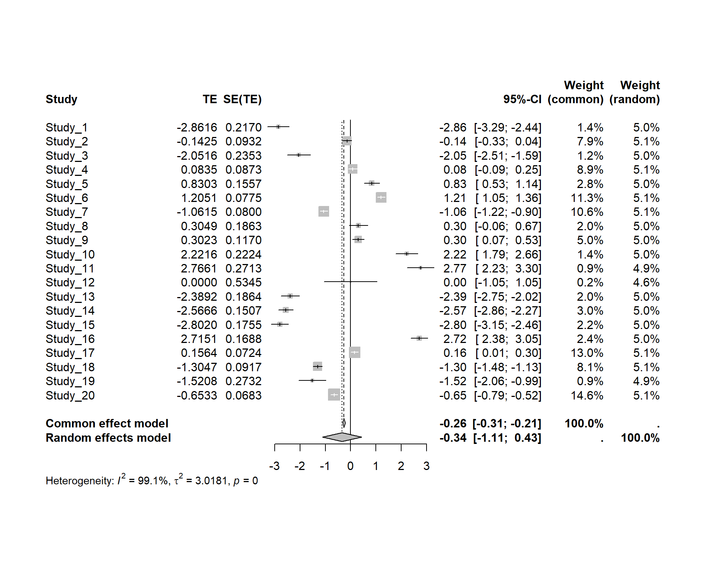
Forest plot for the meta-analysis of raw proportion
#| fig.width: 10
#| fig.height: 8
forest(pes)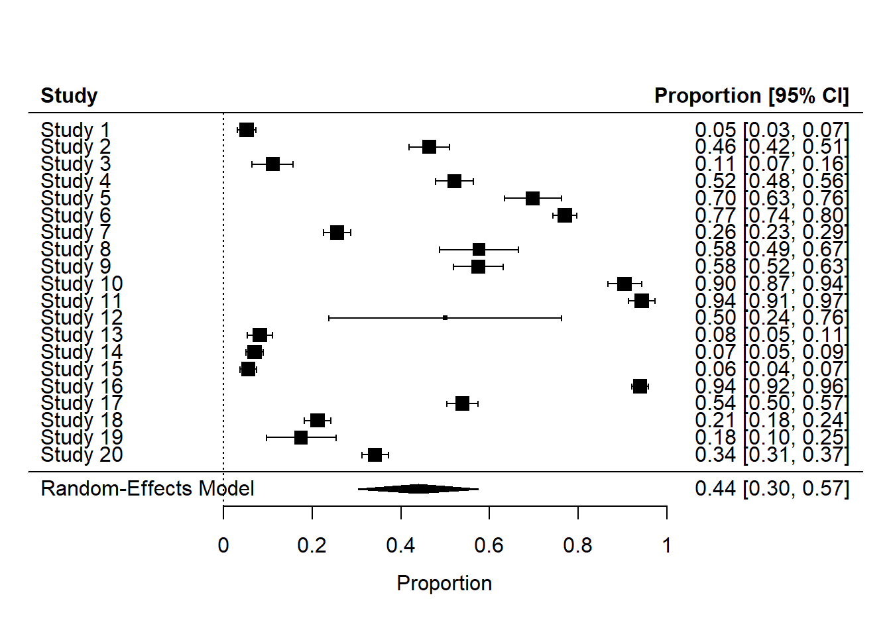
Forest plot for the meta-analysis of raw proportion logit transformed proportions
#| fig.width: 10
#| fig.height: 8
forest(pes.logit_dl)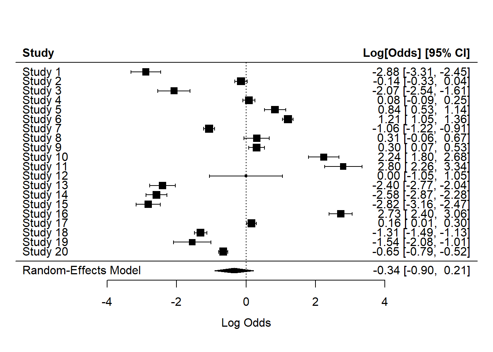
The forest plot does not look good to me. To make a pretty forest plot I will rerun the meta-analysis using metaprop() function.
pes.logit_2 <- metaprop(y,
n,
Study,
data = data1,
sm = "PLO",
method = "Inverse",
method.tau = "DL",
method.ci = "NAsm")
summary(pes.logit_2) proportion 95%-CI %W(common) %W(random)
Study_1 0.0530 [0.0352; 0.0792] 1.4 5.0
Study_2 0.4644 [0.4194; 0.5100] 7.9 5.1
Study_3 0.1117 [0.0732; 0.1668] 1.2 4.9
Study_4 0.5209 [0.4782; 0.5633] 9.0 5.1
Study_5 0.6974 [0.6294; 0.7578] 2.8 5.0
Study_6 0.7697 [0.7417; 0.7956] 11.4 5.1
Study_7 0.2567 [0.2279; 0.2878] 10.7 5.1
Study_8 0.5763 [0.4856; 0.6621] 2.0 5.0
Study_9 0.5753 [0.5185; 0.6301] 5.0 5.1
Study_10 0.9039 [0.8584; 0.9359] 1.4 5.0
Study_11 0.9426 [0.9055; 0.9657] 0.9 4.9
Study_12 0.5000 [0.2597; 0.7403] 0.2 4.3
Study_13 0.0829 [0.0589; 0.1155] 1.9 5.0
Study_14 0.0707 [0.0535; 0.0928] 3.0 5.1
Study_15 0.0565 [0.0406; 0.0780] 2.2 5.0
Study_16 0.9386 [0.9165; 0.9552] 2.4 5.0
Study_17 0.5391 [0.5037; 0.5741] 13.0 5.1
Study_18 0.2130 [0.1844; 0.2447] 8.1 5.1
Study_19 0.1758 [0.1106; 0.2679] 0.9 4.9
Study_20 0.3421 [0.3126; 0.3728] 14.7 5.1
Number of studies: k = 20
Number of observations: o = 9203
Number of events: e = 3868
proportion 95%-CI
Common effect model 0.4349 [0.4223; 0.4475]
Random effects model 0.4151 [0.2892; 0.5531]
Quantifying heterogeneity (with 95%-CIs):
tau^2 = 1.5710 [1.2271; 5.2015]; tau = 1.2534 [1.1078; 2.2807]
I^2 = 99.1% [98.9%; 99.2%]; H = 10.54 [9.74; 11.40]
Test of heterogeneity:
Q d.f. p-value
2110.18 19 0
Details of meta-analysis methods:
- Inverse variance method
- DerSimonian-Laird estimator for tau^2
- Jackson method for confidence interval of tau^2 and tau
- Calculation of I^2 based on Q
- Logit transformation
- Normal approximation confidence interval for individual studiesFinal plot
forest(pes.logit_2,
common = FALSE,
print.tau2 = TRUE,
print.Q = TRUE,
print.pval.Q = TRUE,
print.I2 = TRUE,
leftcols = c("studlab", "event", "n"),
leftlabs = c("Study", "Cases", "Total"),
xlab = "Prevalence",
digits = 2,
col.square = "navy",
col.square.lines = "navy",
col.diamond = "maroon",
col.diamond.lines = "maroon")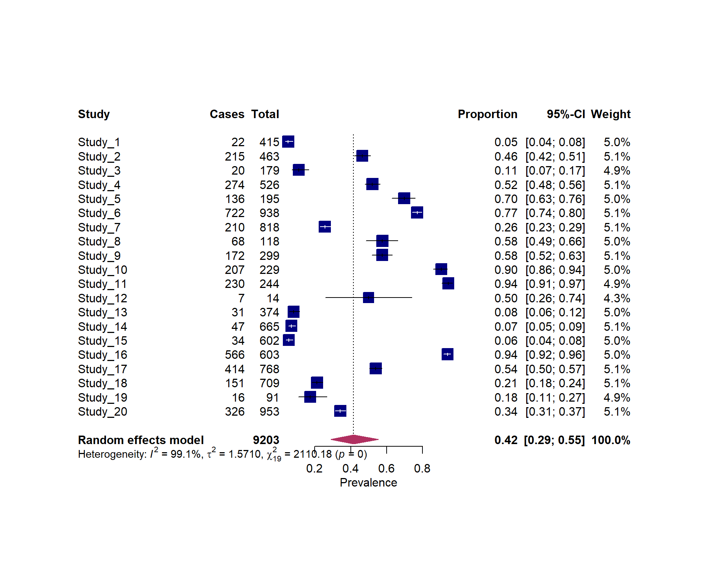
There are three quantifying statistics for heterogeneity.
1) The between-study variance (tau^2): Also known as tau-squared statistic.It reflects the total amount of systematic difference in effects across studies.Sensitive to sample size of the studies included
2) Test of heterogeneity: Cochran’s Q : The statistical power of the Q-test heavily relies on the number of studies included in a meta-analysis, and as a result, it may fail to detect heterogeneity due to limited power when the number of included studies is small (less than 10) or when the included studies are of small size. It only assesses the viability of the null hypothesis and does not provide a quantification of the magnitude of the true heterogeneity in effect sizes
3) I^2 statistic: unaffected by the number of included studies.I2 can take values from 0% to 100%. A value of 0% indicates that all heterogeneity is caused by sampling error alone, requiring no further explanation. I2 Conversely, when equals 100%, the entire heterogeneity can be attributed ex clusively to genuine differences between studies, thus justifying the application of subgroup analyses or meta-regressions to identify potential moderating factors.As a thumb rule, 25%, 50%, and 75% are commonly used to indicate low, medium, and high heterogeneity, respectively.
print(pes.logit_dl)
Random-Effects Model (k = 20; tau^2 estimator: DL)
tau^2 (estimated amount of total heterogeneity): 1.5710 (SE = 0.6875)
tau (square root of estimated tau^2 value): 1.2534
I^2 (total heterogeneity / total variability): 99.10%
H^2 (total variability / sampling variability): 111.06
Test for Heterogeneity:
Q(df = 19) = 2110.1804, p-val < .0001
Model Results:
estimate se zval pval ci.lb ci.ub
-0.3429 0.2838 -1.2085 0.2269 -0.8991 0.2132
---
Signif. codes: 0 '***' 0.001 '**' 0.01 '*' 0.05 '.' 0.1 ' ' 1confint(pes.logit_dl)
estimate ci.lb ci.ub
tau^2 1.5710 1.7531 6.5800
tau 1.2534 1.3240 2.5652
I^2(%) 99.0996 99.1924 99.7835
H^2 111.0621 123.8178 461.9808 This included subgroup analysis and meta-regression; however, these methods will not be demonstrated in this example.
General description
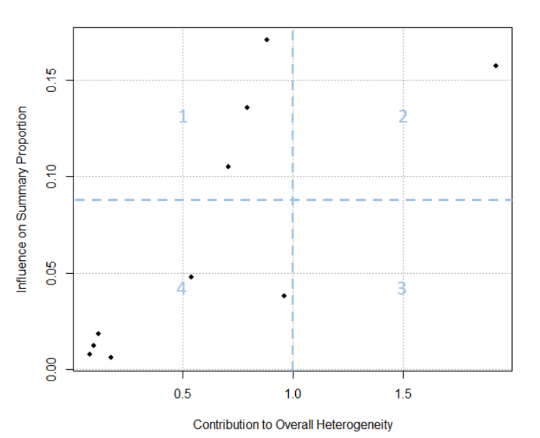
The Baujat plot helps distinguish between outliers that are influential and those that are not [4]:
Baujat plot for our data
bjplot <-baujat(pes.logit_dl,
symbol = 19,
xlim = c(0,8),
xlab = "Contribution to Overall Heterogeneity",
ylab = " Influence on Summary Proportion ")
bjplot <- bjplot[bjplot$x >= 4 | bjplot$y >= 0.2,]
text(bjplot$x , bjplot$y , bjplot$slab , pos=1)
abline(v = 4, lty = 2, col = "blue", lwd = 1.5)
abline(h = 0.2, lty = 2, col = "blue", lwd = 1.5)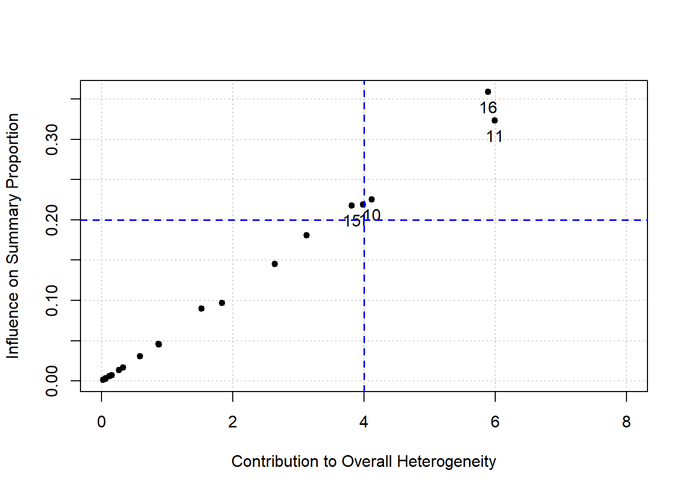
Looks like Study 1,10,11, 15 and 16 could be influential studies.
Let’s see if, our suspicion stands in case of other tests.
# Calculate ESR
stud.res <- rstudent(pes.logit_dl)
# Sort ESR by z- values in descending order
abs.z <- abs( stud.res$z )
stud.res[order(-abs.z)]
resid se z
16 3.2338 1.2142 2.6635
11 3.3034 1.2847 2.5714
10 2.7198 1.2776 2.1287
1 -2.6726 1.2713 -2.1023
15 -2.6035 1.2482 -2.0859
14 -2.3521 1.2416 -1.8944
13 -2.1695 1.2739 -1.7030
3 -1.8203 1.2999 -1.4003
6 1.6334 1.2359 1.3216
19 -1.2638 1.3163 -0.9601
5 1.2406 1.3021 0.9528
18 -1.0160 1.3062 -0.7778
7 -0.7590 1.3335 -0.5692
8 0.6847 1.3126 0.5216
9 0.6807 1.3229 0.5145
17 0.5260 1.3743 0.3827
4 0.4493 1.3529 0.3321
12 0.3585 1.3951 0.2570
20 -0.3282 1.3851 -0.2369
2 0.2107 1.3501 0.1560 We see, for studies 1,10,11, 15 and 16, z-values that exceed an absolute value of 2.
L1O <- leave1out (pes.logit_dl, transf = transf.ilogit )
print (L1O, digits = 6)
estimate zval pval ci.lb ci.ub Q Qp tau2
-1 0.447646 -0.741484 0.458400 0.317394 0.585502 1965.015315 0.000000 1.487802
-2 0.412548 -1.160456 0.245863 0.278806 0.560578 2108.404986 0.000000 1.721234
-3 0.437108 -0.874711 0.381731 0.305850 0.577808 2051.185669 0.000000 1.549776
-4 0.409607 -1.197508 0.231108 0.276088 0.557932 2092.949632 0.000000 1.729503
-5 0.399985 -1.386263 0.165667 0.273113 0.541859 2059.220800 0.000000 1.585646
-6 0.394917 -1.526533 0.126877 0.273978 0.530251 1705.561617 0.000000 1.443339
-7 0.424561 -1.009937 0.312526 0.290244 0.571027 1998.048124 0.000000 1.681049
-8 0.406797 -1.283359 0.199366 0.278217 0.549556 2100.649141 0.000000 1.601786
-9 0.406758 -1.265926 0.205540 0.276544 0.551541 2085.609219 0.000000 1.647587
-10 0.382706 -1.679337 0.093086 0.261914 0.519962 1983.809822 0.000000 1.501007
-11 0.376508 -1.776559 0.075641 0.257144 0.513015 1985.406226 0.000000 1.494065
-12 0.411328 -1.233621 0.217344 0.283325 0.552572 2109.939647 0.000000 1.576104
-13 0.441700 -0.821259 0.411499 0.311451 0.580497 1977.180037 0.000000 1.506357
-14 0.444179 -0.803103 0.421915 0.316170 0.580052 1869.027672 0.000000 1.440832
-15 0.447138 -0.758359 0.448236 0.318480 0.583289 1896.271423 0.000000 1.448422
-16 0.376092 -1.857491 0.063241 0.261099 0.506981 1792.220515 0.000000 1.371118
-17 0.408675 -1.190795 0.233734 0.273383 0.559377 2071.738912 0.000000 1.787311
-18 0.427735 -0.987196 0.323547 0.295454 0.571223 1968.901855 0.000000 1.610882
-19 0.430175 -0.965855 0.334117 0.299090 0.571840 2088.278730 0.000000 1.572175
-20 0.419244 -1.042192 0.297323 0.281156 0.571255 2071.545552 0.000000 1.816087
I2 H2
-1 99.083977 109.167518
-2 99.146274 117.133610
-3 99.122459 113.954759
-4 99.139970 116.274980
-5 99.125883 114.401156
-6 98.944629 94.753423
-7 99.099121 111.002674
-8 99.143122 116.702730
-9 99.136943 115.867179
-10 99.092655 110.211657
-11 99.093385 110.300346
-12 99.146895 117.218869
-13 99.089612 109.843335
-14 99.036932 103.834871
-15 99.050769 105.348412
-16 98.995659 99.567806
-17 99.131165 115.096606
-18 99.085785 109.383436
-19 99.138046 116.015485
-20 99.131084 115.085864 Surprisingly, removal of any study did not change the estimate significantly (for example, > 10%). But close to 10% change happened for removing Study 16. Now, vizualize the results
l1o= leave1out (pes.logit_dl)
yi= l1o$estimate; vi= l1o$se ^2
forest (yi,
vi,
transf = transf.ilogit ,
slab = paste (data1$Study) ,
xlab =" Leave -one -out summary proportions ",
refline = pes_predict_dl$pred ,
digits =6)
abline (h =0.1)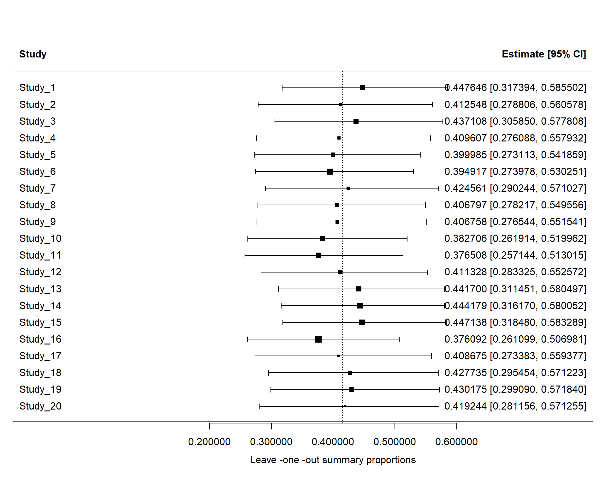
From forest plot, it seams removal of Study 16 results significant change in pooled estimate.
For confirmation we can perform leave-one-out diagnostics with the influence() function
inf <- influence (pes.logit_dl)
print (inf , digits =3)
rstudent dffits cook.d cov.r tau2.del QE.del hat weight dfbs inf
1 -2.102 -0.480 0.219 0.998 1.488 1965.015 0.050 4.974 -0.480
2 0.156 0.035 0.001 1.152 1.721 2108.405 0.051 5.097 0.035
3 -1.400 -0.319 0.101 1.038 1.550 2051.186 0.049 4.948 -0.319
4 0.332 0.076 0.006 1.157 1.730 2092.950 0.051 5.101 0.076
5 0.953 0.220 0.049 1.063 1.586 2059.221 0.050 5.048 0.220
6 1.322 0.308 0.087 0.970 1.443 1705.562 0.051 5.106 0.308
7 -0.569 -0.132 0.019 1.126 1.681 1998.048 0.051 5.105 -0.132
8 0.522 0.120 0.015 1.073 1.602 2100.649 0.050 5.015 0.120
9 0.515 0.119 0.015 1.104 1.648 2085.609 0.051 5.081 0.119
10 2.129 0.487 0.227 1.006 1.501 1983.810 0.050 4.967 0.487
11 2.571 0.583 0.324 1.001 1.494 1985.406 0.049 4.890 0.583
12 0.257 0.055 0.003 1.049 1.576 2109.940 0.043 4.337 0.055
13 -1.703 -0.391 0.147 1.010 1.506 1977.180 0.050 5.013 -0.391
14 -1.894 -0.437 0.175 0.968 1.441 1869.028 0.051 5.052 -0.436
15 -2.086 -0.479 0.212 0.973 1.448 1896.271 0.050 5.026 -0.479
16 2.663 0.615 0.331 0.922 1.371 1792.221 0.050 5.033 0.615
17 0.383 0.088 0.009 1.195 1.787 2071.739 0.051 5.109 0.088
18 -0.778 -0.180 0.033 1.080 1.611 1968.902 0.051 5.098 -0.180
19 -0.960 -0.218 0.047 1.052 1.572 2088.279 0.049 4.890 -0.218
20 -0.237 -0.056 0.004 1.214 1.816 2071.546 0.051 5.110 -0.056 No study was marked with asterisk (*). Now, we can check different plot
plot (inf)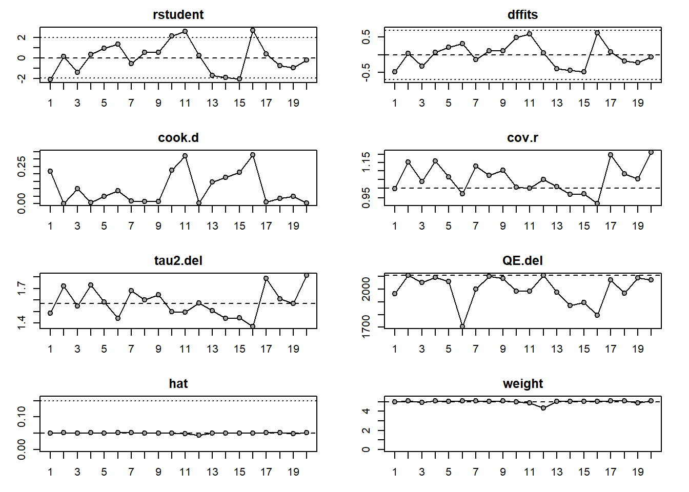
No studies had red color
In conclusion, Baujat plots identified several studies with relatively large contributions to heterogeneity and/or pooled effect estimation. However, leave-one-out diagnostics showed that omission of these studies did not materially alter the pooled estimate or heterogeneity statistics, suggesting that no single study exerted undue influence on the overall meta-analysis results.
One of the major threats to the validity of meta-analyses is publication bias [4]. Current methods (e.g., funnel plot, trim-and-fill method, Egger’s regression model, etc.) for detecting publication bias and its impact assume that large studies or studies with significant results are most likely to be published. While this assumption might be logical for other types of studies (e.g., randomized control trials), it does not fit proportion studies. Most proportion studies are observational, non-comparative, and may be context-specific. They inherently preclude the testing of statistical significance for their findings. Therefore, the application of existing methods of addressing publication bias is not recommended in meta-analyses of proportion or prevalence studies [8].
However, some researchers publish funnel plot and other statistics.
funnel(pes.logit_dl)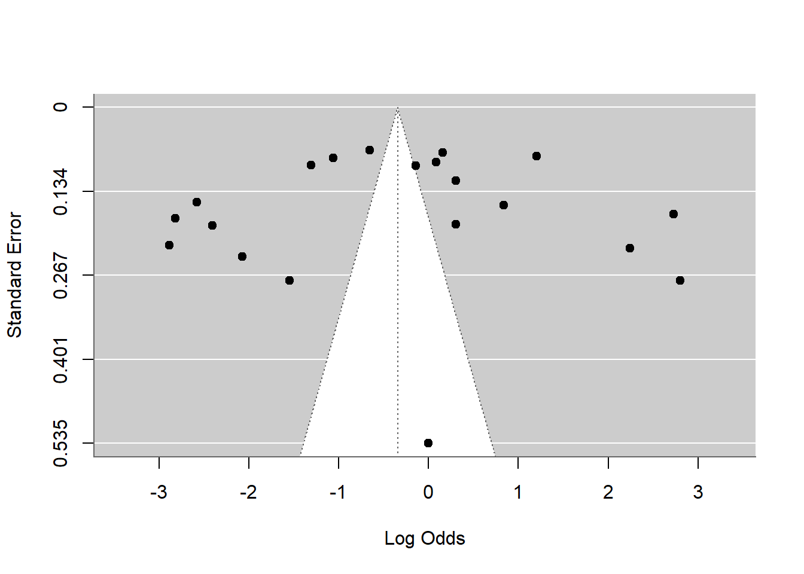
Caution!!!
In prevalence/proportion meta-analysis, asymmetry may arise from:
not necessarily publication bias. So funnel plot asymmetry alone is insufficient evidence.
regtest(pes.logit_dl, model = "rma")
Regression Test for Funnel Plot Asymmetry
Model: mixed-effects meta-regression model
Predictor: standard error
Test for Funnel Plot Asymmetry: z = 0.1430, p = 0.8863
Limit Estimate (as sei -> 0): b = -0.4120 (CI: -1.5146, 0.6907)However, Egger’s test can produce inflated false positives in proportion meta-analysis, especially when:
regtest(pes.logit_dl, predictor = "ni")
Regression Test for Funnel Plot Asymmetry
Model: mixed-effects meta-regression model
Predictor: sample size
Test for Funnel Plot Asymmetry: z = -0.5592, p = 0.5760taf <- trimfill(pes.logit_dl)
funnel(taf)